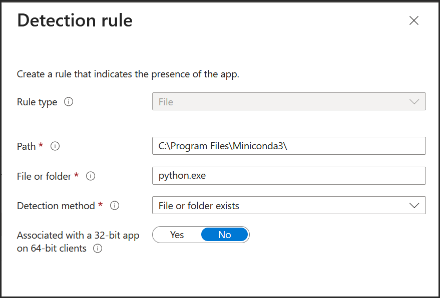
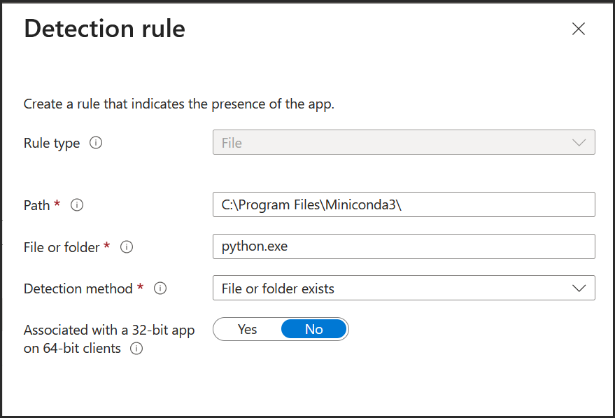

Deploy Mini Conda via Intune
This guide walks you through packaging and deploying Miniconda silently via Microsoft Intune using Win32 apps.
üì¶ Step 1: Download Miniconda Installer
Get the latest Windows installer from Anaconda's official site.
Choose the .exe installer for 64-bit Windows.
üìÅ Step 2: Grab My Repo
Download the install and uninstall scripts from my GitHub repo.
üõ†Ô∏è Step 3: Prepare the App for Intune
Use the Microsoft Win32 Content Prep Tool to convert the installer folder into a .intunewin file.
Download from GitHub-Microsoft-Win32-Content-Prep-Tool
Command Notes:
.\IntuneWinAppUtil.exe -c "C:\Miniconda" -s "install.ps1" -o "C:\IntuneWinApp\Packages"C =Source folder containing installer and scriptS =Setup file (.ps1)O =Output folder for .intunewin
üì§ Step 4: Upload to Intune
Go to Intune Admin Center > Apps > Windows apps > Create > Windows app (Win32)
Upload the install.intunewin file.
 

- Required: Installs automatically
- Available: User can install from Company Portal
- Uninstall: Removes the app from target users
üß™ Step 5: Test Deployment
Assign the app to a test group and verify installation via Company Portal or automatic deployment.